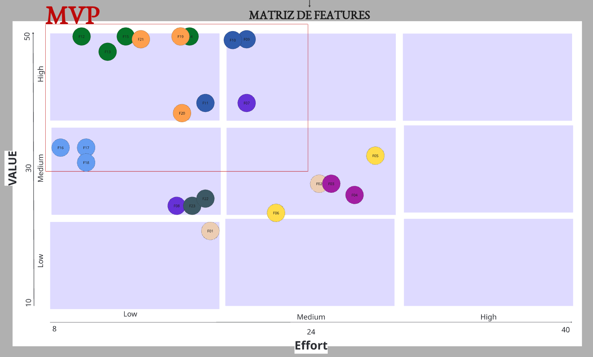

Priorização de Features — Crianex Hub¶
Histórico de Revisão¶
| Versão | Data | Descrição | Autor(es) | Revisores(es) |
|---|---|---|---|---|
| 1.0 | 14/05/2026 | Template do Priorização do backlog | Lucas A. Zanetti | Heitor Macedo Ricardo |
| 1.1 | 17/05/2026 | Tabela de priorização com diagrama de valor×esforço | Lucas A. Zanetti | Heitor Macedo Ricardo |
| 2.0 | 15/06/2026 | Refatoração completa: mudança para abordagem top-down (Feature como unidade principal); nova matriz; seções por iteração | Lucas A. Zanetti | Hugo Freitas Silva |
Método de Priorização: Top-Down (Feature → RF)¶
Por que Top-Down?¶
A abordagem anterior calculava o índice de prioridade de cada Requisito Funcional individualmente e depois agregava esses valores para estimar a prioridade de uma Feature (bottom-up). Esse modelo apresentou um problema estrutural: a média dos RFs nivela diferenças internas da feature e não representa o valor de negócio real que ela entrega como unidade funcional.
A abordagem correta é top-down: priorizamos as Features diretamente — elas são a unidade de entrega e de decisão de negócio. O cálculo dos RFs passa a ser utilizado apenas caso seja necessário ordenar os requisitos dentro de uma feature já priorizada, definindo a sequência de implementação interna.
IP = VB / ES (aplicado diretamente à Feature)
IP ≥ 1,50 → Alta prioridade (Q1)
IP 1,00–1,49 → Média prioridade (Q2)
IP < 1,00 → Baixa prioridade (Q3/Q4)| Sigla | Descrição |
|---|---|
| VB | Valor de Negócio — impacto direto nos OEs |
| ES | Esforço de implementação da Feature completa |
| IP | Índice de Prioridade = VB / ES |
Critérios para VALOR da Feature¶
Os mesmos critérios utilizados para os RFs foram aplicados diretamente no nível da Feature. A diferença está no objeto avaliado: em vez de avaliar um requisito isolado, avalia-se o conjunto de comportamentos que a feature entrega.
| Critério | Peso | Descrição |
|---|---|---|
| Impacto de Negócio | 3 | Mede o quanto a feature contribui diretamente para os objetivos estratégicos e operacionais da organização, como aumento de produtividade, centralização de processos, redução de retrabalho ou geração de valor comercial. |
| Frequência de Uso | 3 | Avalia com que frequência a feature será utilizada pelos usuários no contexto diário do sistema. Features acessadas constantemente tendem a possuir maior valor operacional. |
| Valor percebido pelo Usuário | 2 | Representa o quanto a feature melhora a experiência, praticidade ou eficiência percebida pelos usuários durante a utilização do sistema. |
| Impacto Estratégico | 2 | Avalia o quanto a feature contribui para diferenciais estratégicos do produto, crescimento futuro da plataforma, tomada de decisão ou posicionamento tecnológico da organização. |
VB = (ImpactoNegocio × 3) + (FrequenciaUso × 3) + (ValorUsuario × 2) + (ImpactoEstrategico × 2)Critérios para ESFORÇO da Feature¶
Para o esforço, a complexidade técnica considera tanto os Requisitos Funcionais quanto os Requisitos Não Funcionais vinculados à feature. RNFs impõem restrições de qualidade (segurança, desempenho, conformidade) que aumentam diretamente a dificuldade de implementação. Ignorá-los subestimaria o esforço real.
| Critério | Peso | Descrição |
|---|---|---|
| Complexidade técnica | 3 | Mede a dificuldade de implementação considerando lógica de negócio dos RFs, integrações, persistência de dados e restrições impostas pelos RNFs vinculados (segurança, desempenho, conformidade, usabilidade). |
| Dependências | 2 | Avalia o quanto a feature depende de outros módulos, serviços ou componentes já existentes para funcionar corretamente. |
| Risco técnico | 2 | Representa a probabilidade de ocorrerem problemas técnicos, falhas de implementação ou inconsistências durante o desenvolvimento. |
| Tempo de implementação | 1 | Mede o esforço temporal estimado para desenvolver, testar e validar todos os RFs e atender os RNFs vinculados à feature. |
ES = (Complexidade × 3) + (Dependencias × 2) + (RiscoTecnico × 2) + (Tempo × 1)Validação com o Cliente¶
Os critérios de valor (impacto de negócio, frequência de uso, valor percebido pelo usuário e impacto estratégico) e seus respectivos pesos foram definidos em conjunto com o cliente em sessão de priorização. O cliente avaliou cada feature e atribuiu notas de 1 a 5 por critério, validando tanto os pesos quanto os scores individuais. Os resultados foram documentados no quadro Miro abaixo.
Cálculos no Miro¶
Os cálculos detalhados de cada Feature — critério por critério, com notas e justificativas — estão documentados no quadro abaixo:
Matriz de Features (Valor × Esforço)¶
A matriz posiciona cada feature no plano Valor × Esforço. O quadrante superior-esquerdo (alto valor, baixo esforço) delimita o MVP — as features com melhor retorno relativo sobre o investimento. As features fora do MVP possuem menor relação custo-benefício e serão reavaliadas em iterações futuras.

Tabela de Priorização de Features¶
Os valores de VB, ES e IP são calculados no Miro e serão preenchidos manualmente nesta tabela.
*Feature fora do MVP incluída em uma iteração por dependência funcional com outra feature já priorizada.
| ID | Feature | CP | OE | VB | ES | IP | Quadrante | MVP |
|---|---|---|---|---|---|---|---|---|
| F09 | Autenticar para acesso seguro ao sistema | CP5 | OE2 | 50 | 21 | 2,38 | Q1 | MVP |
| F12 | Gerenciar produtos SaaS da vitrine para manutenção do portfólio | CP4 | OE2 | 50 | 10 | 5 | Q1 | MVP |
| F13 | Controlar publicação de produto SaaS para exibição pública | CP4 | OE2 | 47 | 14 | 3,36 | Q1 | MVP |
| F15 | Disponibilizar informações institucionais para apresentação da empresa | CP4 | OE2 | 50 | 15 | 3,33 | Q1 | MVP |
| F21 | Registrar interações comerciais para rastreamento do relacionamento | CP1 | OE3 | 50 | 16 | 3,12 | Q1 | MVP |
| F19 | Gerenciar clientes e leads para organização do relacionamento comercial | CP1 | OE3 | 50 | 20 | 2,5 | Q1 | MVP |
| F20 | Gerenciar colunas do funil para personalização do processo comercial | CP1 | OE3 | 36 | 17 | 2,12 | Q1 | MVP |
| F11 | Gerenciar usuários da plataforma para controle operacional | CP5 | OE2 | 39 | 18 | 2,17 | Q1 | MVP |
| F16 | Gerenciar artigos de FAQs para manutenção da base de conhecimento | CP6 | OE2 | 32 | 8 | 4 | Q1 | MVP |
| F17 | Controlar publicação de artigos FAQ para disponibilização pública | CP6 | OE2 | 30 | 10 | 3 | Q1 | MVP |
| F18 | Melhorar a correspondência entre artigos do FAQ e dúvidas dos leads | CP6 | OE2 | 30 | 10 | 3 | Q1 | MVP |
| F14 | Exibir canais de contato na Vitrine | CP4 | OE2 | 50 | 20 | 2,5 | Q1 | MVP |
| F10 | Permitir acesso ao painel administrativo para gerenciamento da plataforma | CP5 | OE2 | 50 | 21 | 2,38 | Q1 | MVP |
| F07 | Acompanhar histórico e status de notificações | CP9 | OE3 | 39 | 22 | 1,77 | Q1 | MVP |
| F08 | Gerenciar templates de notificações | CP9 | OE3 | 22 | 12 | 1,83 | Q1 | IT2* |
| F22 | Acessar tickets para acompanhamento dos atendimentos | CP8 | OE3 | 25 | 19 | 1,31 | Q2 | Fora |
| F23 | Gerenciar tickets para manutenção da operação de suporte | CP8 | OE3 | 20 | 18 | 1,11 | Q2 | Fora |
| F06 | Gerar relatórios financeiros para exportação de dados | CP7 | OE1 | 22 | 22 | 1,00 | Q2 | Fora |
| F03 | Visualizar indicadores operacionais para acompanhamento estratégico | CP3 | OE1 | 27 | 26 | 1,04 | Q2 | Fora |
| F02 | Monitorar estado dos componentes para garantia de disponibilidade do sistema | CP2 | OE1 | 27 | 25 | 1,08 | Q2 | Fora |
| F05 | Consultar registros financeiros para acompanhamento de faturamento | CP7 | OE1 | 33 | 29 | 1,14 | Q2 | Fora |
| F01 | Monitorar eventos de segurança para rastreamento de acessos ao sistema | CP2 | OE1 | 18 | 19 | 0,95 | Q3/Q4 | Fora |
| F04 | Visualizar indicadores financeiros para análise gerencial | CP3 | OE1 | 26 | 30 | 0,87 | Q3/Q4 | Fora |
Features por Iteração¶
IT1 — Vitrine Pública¶
Concluída 28/04/2026 – 07/06/2026 CPs entregues: CP4 · CP5 · CP6
Primeira iteração focada em estabelecer a presença pública da Crianex e a infraestrutura administrativa base. Todas as features foram implementadas e validadas com o cliente.
CP5 — Painel de Gerenciamento do Administrador¶
| Feature | Descrição |
|---|---|
| F09 | Autenticar para acesso seguro ao sistema |
| F10 | Permitir acesso ao painel administrativo |
| F11 | Gerenciar usuários da plataforma |
CP4 — Plataforma Pública de Apresentação da Empresa¶
| Feature | Descrição |
|---|---|
| F12 | Gerenciar produtos SaaS da vitrine |
| F13 | Controlar publicação de produtos |
| F14 | Exibir canais de contato na vitrine |
| F15 | Disponibilizar informações institucionais |
CP6 — FAQ e Base de Conhecimentos por Produto¶
| Feature | Descrição |
|---|---|
| F16 | Gerenciar artigos de FAQ |
| F17 | Controlar publicação de artigos FAQ |
| F18 | Melhorar correspondência entre artigos e dúvidas dos leads |
IT2 — Lead Capture¶
Em andamento 08/06/2026 – 28/06/2026 CPs selecionadas: CP1 · CP9
Na reunião de Iteration Commitment da IT2, a equipe selecionou as features das CPs CP1 (CRM Interno de Clientes) e CP9 (Sistema de Notificações), priorizando o fluxo comercial de gestão de leads e o canal de comunicação interna.
CP1 — CRM Interno de Clientes¶
| Feature | Descrição |
|---|---|
| F19 | Gerenciar clientes e leads |
| F20 | Gerenciar colunas do funil de vendas |
| F21 | Registrar interações comerciais |
CP9 — Sistema de Notificações¶
| Feature | Descrição |
|---|---|
| F07 | Acompanhar histórico e status de notificações |
| F08 | Gerenciar templates de notificações Fora do MVP |
F08 não atingiu o limiar do MVP na matriz de priorização, mas foi incluída na IT2 por dependência funcional com F07 — o histórico de notificações (F07) pressupõe a existência de templates configurados. Dentro da iteração, F08 será implementada por último, após F07 e todas as features de CP1 estarem concluídas.
IT3 — Núcleo Operacional¶
Planejada 29/06/2026 – 07/07/2026
Na reunião de Iteration Commitment da IT3, a equipe selecionará apenas uma fração das features listadas abaixo, com base na capacidade disponível e na reavaliação de valor naquele momento. Features não selecionadas serão descartadas do escopo da iteração.
CP8 — Sistema de Tickets de Suporte Fora do MVP¶
| Feature | Descrição |
|---|---|
| F22 | Acessar tickets para acompanhamento dos atendimentos |
| F23 | Gerenciar tickets para manutenção da operação de suporte |
CP2 · CP3 · CP7 — Gestão Operacional e Financeira Fora do MVP¶
| Feature | CP | Descrição |
|---|---|---|
| F01 | CP2 | Monitorar eventos de segurança |
| F02 | CP2 | Monitorar estado dos componentes do sistema |
| F03 | CP3 | Visualizar indicadores operacionais |
| F04 | CP3 | Visualizar indicadores financeiros |
| F05 | CP7 | Consultar registros financeiros |
| F06 | CP7 | Gerar relatórios financeiros |